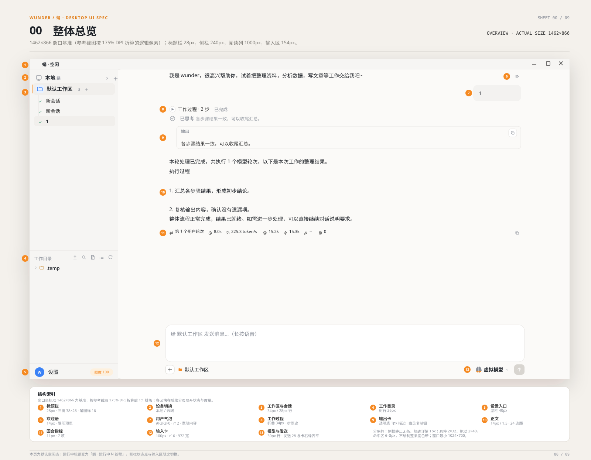
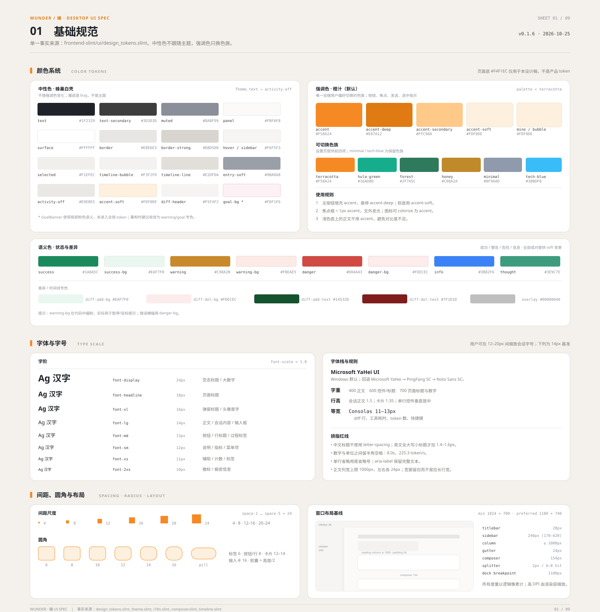
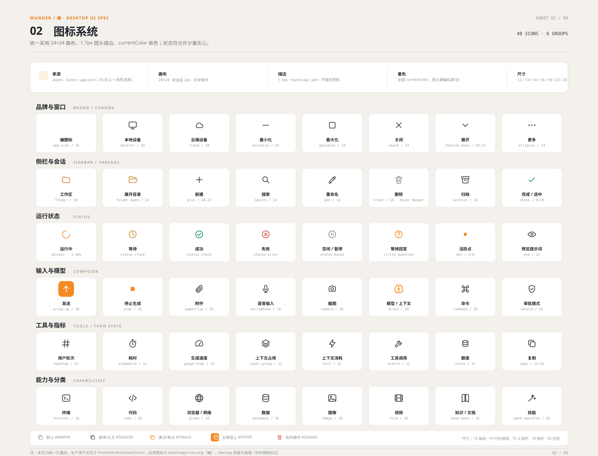
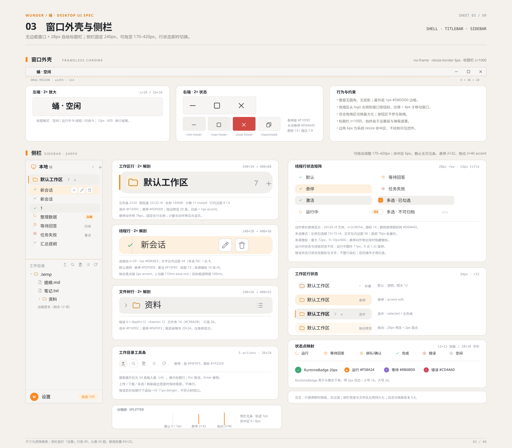
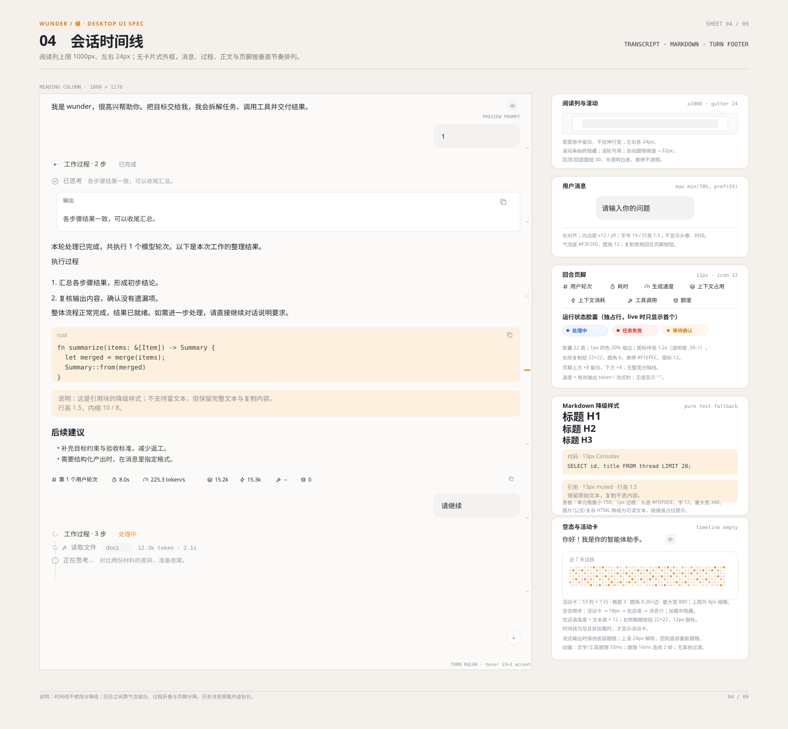
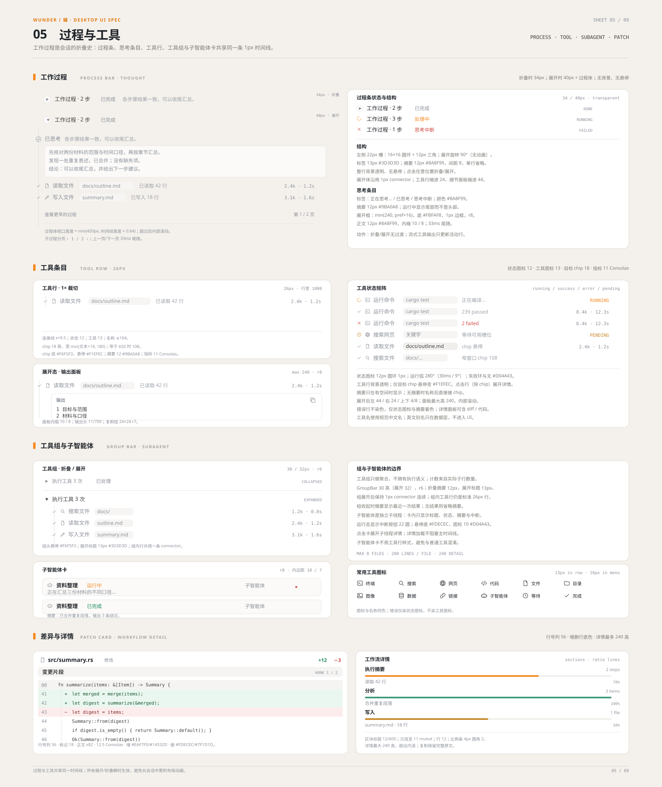
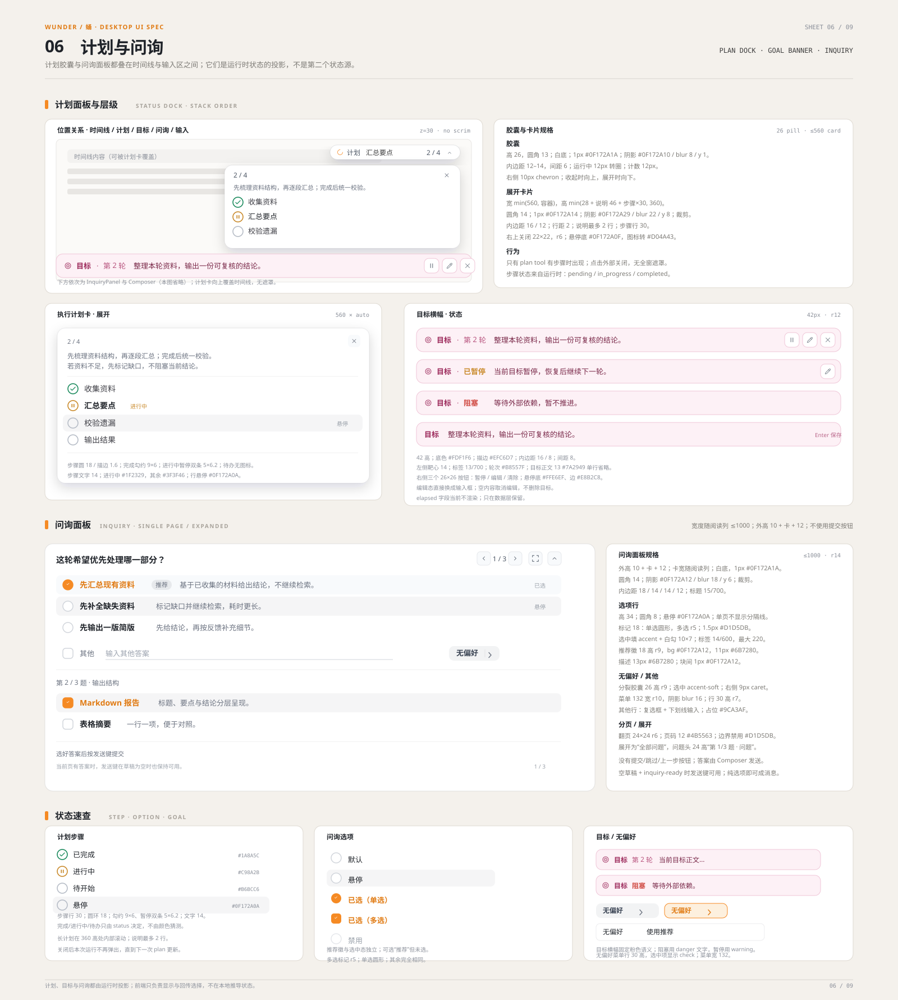
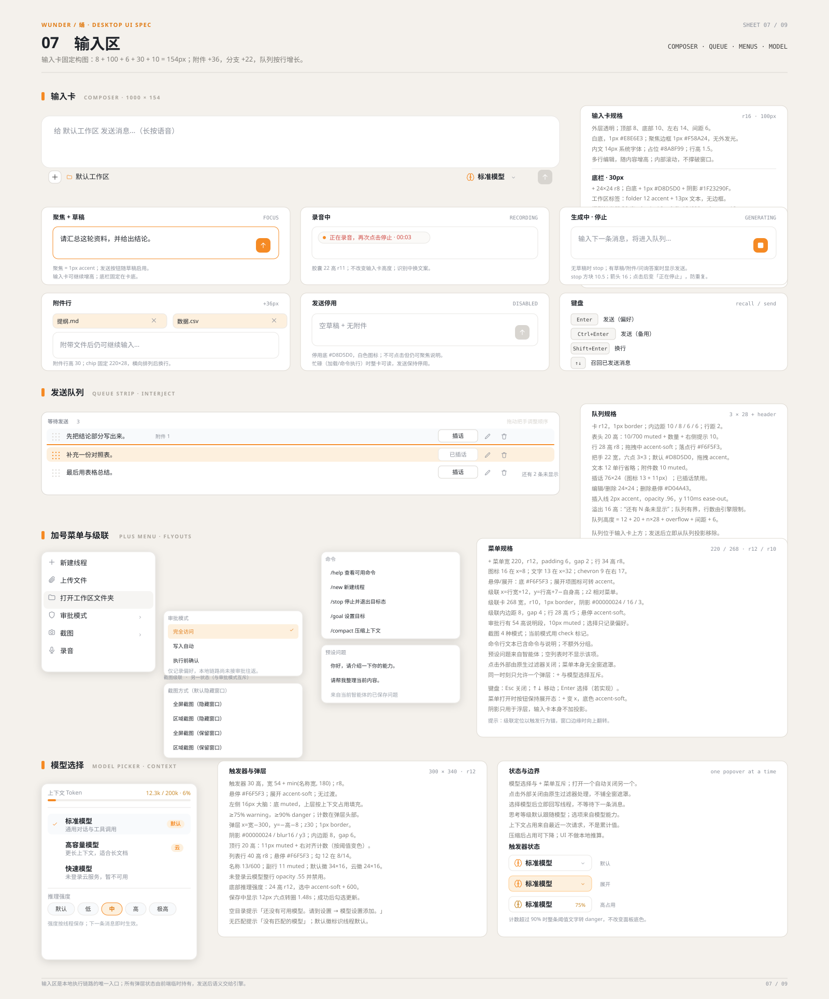
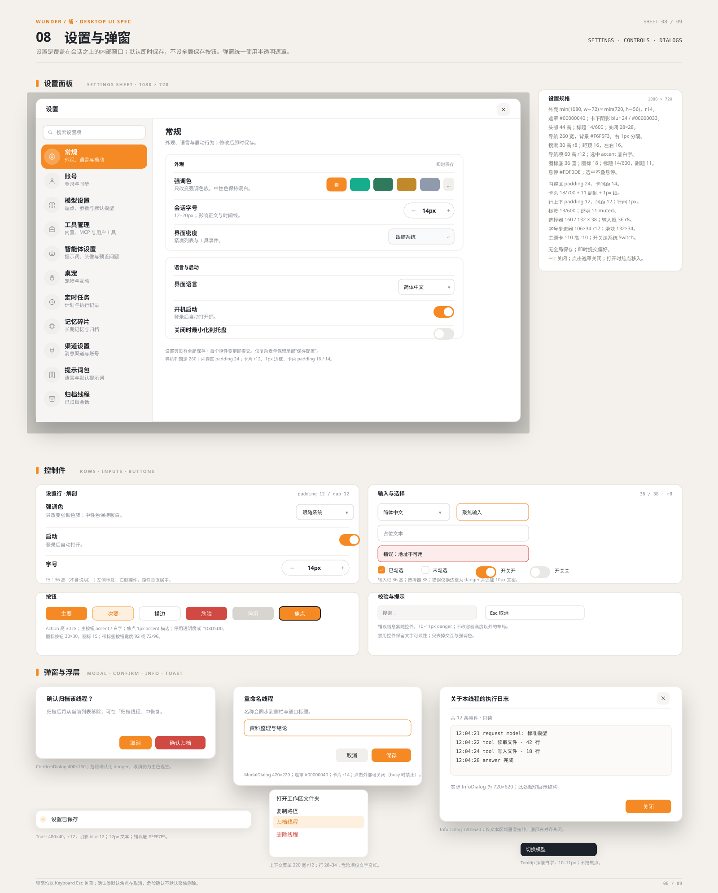
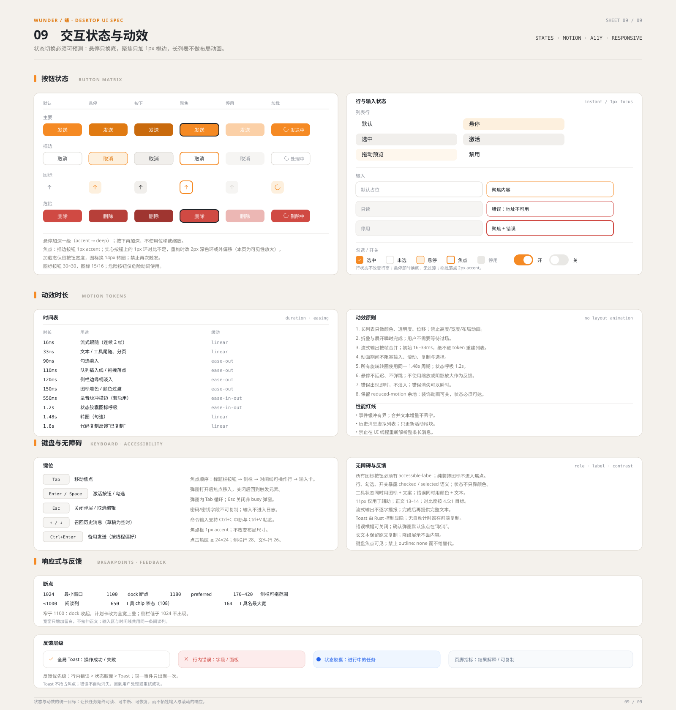

以 frontend-slint 当前实现为事实基线的完整视觉规范：基础变量、图标、外壳、时间线、过程与工具、计划与问询、输入区、设置与弹窗、交互状态。适合后续改稿、重构对照与实现验收。


颜色、强调色族、字阶、间距、圆角、布局基线与语义色。

48 个统一化图标，24×24 画布、1.7px 描边、currentColor 着色。

28px 标题栏、窗口按钮状态、工作区/线程行、工作目录与底栏。

阅读列、欢迎语、用户气泡、过程折叠、输出卡、Markdown 降级、回合页脚与空态。

过程条与思考条目、工具行状态矩阵、工具组、子智能体卡、差异卡与详情。

计划胶囊与展开卡、目标横幅四种状态、问询面板的选项/其他/无偏好与分页。

输入卡构图与状态、发送/停止、附件、录音、队列、加号菜单与级联、模型选择。

设置壳与 11 个分类、控制件规格、确认/信息/模态/Toast/菜单/Tooltip。

按钮/行/输入状态矩阵、动效时长、键盘、无障碍、响应式断点与反馈层级。